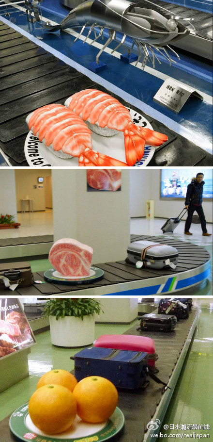
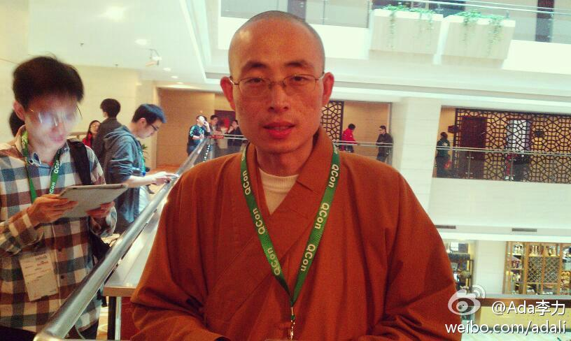

#QCon#上有甲骨文的展台，第一天屏幕放是Big Data的内容，是@jackhan2008 @SerolL 负责。第二天是Java的内容，该我看一整天摊儿了。欢迎来交流关于技术社区，开发者项目，或者Java的发展。
今天在#QCon#上见到了那个在百度技术大会上一举成名的13岁开发者，郑博闻@98bob 晚上回家路上一起拼了车。突然成名以及遭遇随后而来的各路板砖，即使成年人也很难过这种关卡。这个少年态度谦和，有些腼腆，交流很顺畅，在学校还曾是中队长，不是我们以为的那种Geek风格。很难得。
这个有意思，日本服务上的细腻处处见。//@查立:世上总存有心人！//@蔡康永: ~迴~轉~壽~司~@日本潮流最前线:日本大分机场和宫崎机场，别出心裁将本地特产制作成巨型模型放到了行李传送带上。既缓解旅客等行李之无聊，又起到了宣传的效果~~~宫崎名物・宫崎牛的「霜降り肉」等模型过于逼真，以致于有人致电询问是否是真的。 
#QCon#上遇到龙泉寺的贤信法师，那里有个@龙泉寺信息技术组 除了开发软件，还有周末例会，集中开发，IT培训，有机农场劳动，栗子园采摘，登山远足等活动。我打算找个周末带孩子去玩玩。有斋饭，也可以住宿，要预约。 